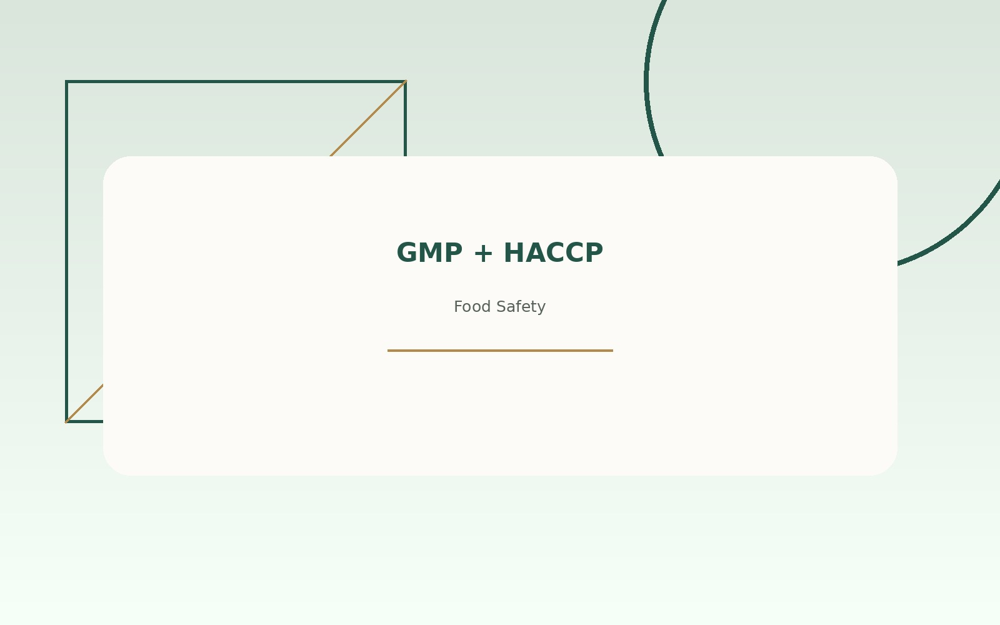
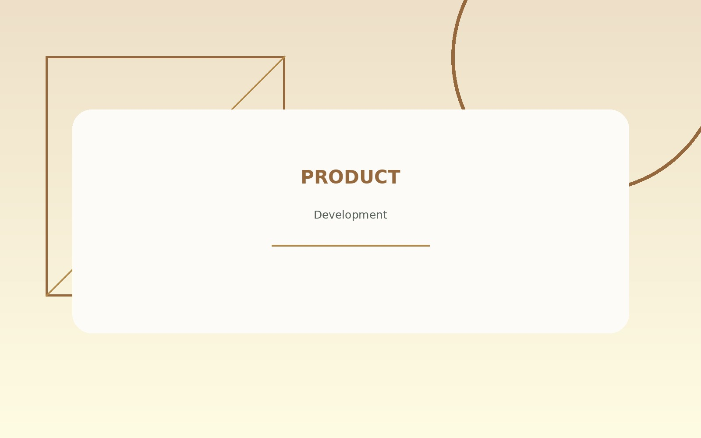

Food Safety
Applying preventive thinking, GMP, HACCP principles, and sanitation awareness to support safe food production.
Food Technology Graduate
Hello, I’m Finka Aura Fauzi, a Food Technology graduate from Andalas University with a strong interest in food safety, quality assurance, product development, and food certification.
Professional Interests
I am interested in work that strengthens product quality, protects consumers, and helps food businesses build reliable processes.
Applying preventive thinking, GMP, HACCP principles, and sanitation awareness to support safe food production.
Supporting consistent standards through observation, documentation, analysis, and continuous improvement.
Exploring product ideas through formulation, processing, sensory evaluation, packaging, and market relevance.
Understanding food registration, labeling, documentation, and production requirements for regulatory readiness.
Selected Projects

Assessment of small-scale food production practices with practical recommendations for stronger hygiene and process control.
See project
A structured product development process covering concept, formulation, processing, packaging, and consumer considerations.
See projectCore Capabilities
My academic and practical experiences have helped me build a balanced foundation in food technology, communication, documentation, and collaborative work.
View All SkillsLet’s Connect